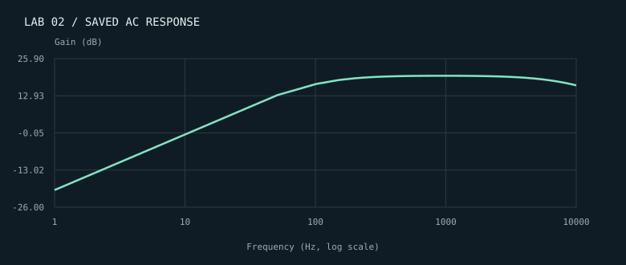

ARTIFACT 01 / LAB 2SIMULATION

An active filter, from
schematic to response.
A Qucs-S design using an MCP6001 op amp, an input RC network, and parallel RC feedback. The saved AC sweep connects component choices to the circuit’s frequency response.
MY CONTRIBUTION & WHAT IT DEMONSTRATES
Personal note to come: describe your component choices, what you tested, and what the response taught you.